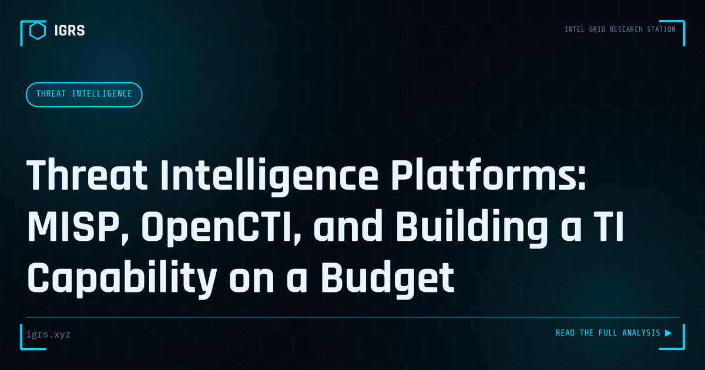

Threat Intelligence Platforms: MISP, OpenCTI, and Building a TI Capability on a Budget
| File No. | IGRS-051/2026 |
| Subject | Guide to open-source threat intelligence platforms for Indian security teams with limited budgets |
| Category | Threat Intelligence |
| Author | Manuj Kumar Pandey |
| Published | 2026-05-09 |
| Reading time | 12 minutes |
Most Indian security teams cannot afford commercial TI platforms costing thousands of dollars per month. Open-source alternatives provide most of the capability at zero licensing cost.
Threat Intelligence Platforms: Operationalising Intelligence
Threat intelligence is only valuable when it reaches the right systems and people in usable form. Threat Intelligence Platforms (TIPs) are the tools that collect, organise, analyse, and distribute threat data, turning scattered feeds into operational defence. For Indian security teams building intelligence capability, understanding TIPs is essential. This guide explains what they do and how to use them.
What a TIP Does
A Threat Intelligence Platform aggregates threat data from many sources, normalises it into a common format, enriches it with context, and distributes it to security tools and analysts. Rather than analysts manually tracking dozens of feeds, a TIP centralises intelligence, deduplicates it, scores it, and feeds it where it is needed — into firewalls, SIEMs, and investigation workflows.
Core Capabilities
| Capability | Function |
|---|---|
| Aggregation | Collect feeds from many sources |
| Normalisation | Standardise diverse data formats |
| Enrichment | Add context to indicators |
| Scoring | Prioritise by relevance and confidence |
| Integration | Feed intelligence to security tools |
Indicators and Context
TIPs manage indicators of compromise — malicious IPs, domains, file hashes, and URLs — but their real value is context. A bare indicator has limited use; enriched with the associated threat actor, campaign, confidence level, and recommended action, it becomes actionable intelligence. Good TIPs preserve this context, linking indicators to the broader picture of who is attacking and how.
Open-Source and Commercial Options
Organisations can choose from open-source TIPs like MISP, which is widely used for sharing structured threat intelligence, and commercial platforms offering integrated feeds and advanced features. MISP in particular has strong community adoption and supports intelligence sharing between organisations. The choice depends on resources and maturity, but even open-source options provide substantial capability for teams beginning their intelligence journey.
Intelligence Sharing
A key TIP function is enabling intelligence sharing between organisations and sectors. Threat sharing communities and ISACs allow members to exchange indicators and warnings, multiplying everyone's defensive awareness. In India, sectoral sharing and CERT-In coordination play this role. Platforms like MISP facilitate structured sharing, letting one organisation's detection become another's prevention — a force multiplier against common adversaries.
Integrating with Defences
The value of a TIP is realised through integration. By feeding curated indicators into firewalls, intrusion detection, SIEMs, and endpoint tools, intelligence drives automated blocking and detection. Integration with investigation workflows enriches alerts with intelligence context, helping analysts triage faster. Without integration, a TIP is just a database; with it, intelligence actively strengthens the entire security stack.
Building Intelligence Capability in India
For Indian organisations, a TIP is the backbone of an intelligence-driven security programme. Starting with an open-source platform like MISP, integrating relevant feeds including India-specific sources and CERT-In advisories, and connecting the TIP to existing defences builds a capability that turns raw threat data into operational protection. As threats grow more sophisticated and India-targeted, the ability to collect, contextualise, and operationalise threat intelligence becomes a defining factor in effective defence — and the TIP is the tool that makes it possible.